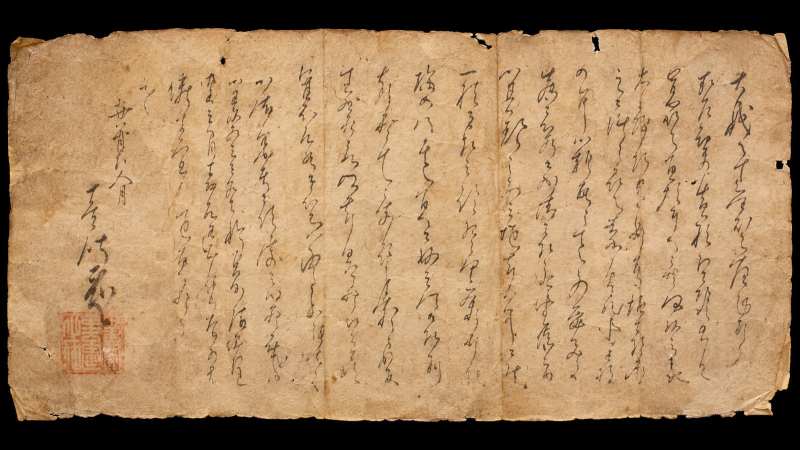

古文書
気の用い方につき定書
写。原本は所在不明
＋ 拡大－ 縮小↻ 回転⤢ 全画面1 / 3 コマ⇩ ダウンロード

翻刻
定
一 氣ヲ身ニ向クル者ハ之ヲ罰ス
一 其ノ力ヲ以テ人ヲ傷ツクル者ハ重ク罰ス可キ事
一 病ヲ治スト稱シ氣ヲ人ノ身ニ入ルル者ハ同罪タルヘシ
一 童ニ氣ノ使ヒ様ヲ教フル事堅ク停止ノ事
（以下略）
一 氣ヲ身ニ向クル者ハ之ヲ罰ス
一 其ノ力ヲ以テ人ヲ傷ツクル者ハ重ク罰ス可キ事
一 病ヲ治スト稱シ氣ヲ人ノ身ニ入ルル者ハ同罪タルヘシ
一 童ニ氣ノ使ヒ様ヲ教フル事堅ク停止ノ事
（以下略）
解説
郡役所が村々に出した定書の写し。冒頭の条は、現代語にすると「気を身に向ける者は、これを罰する」。「気」は、自分の身体や物に向ける力の古い呼び名である。
同じ趣旨の定めは各地に残る。身体の中のつくりが知られていなかった時代、力を身に向けて筋を裂き、骨を折る者が少なくなかったことが背景にあるとされる。一方で、北の嶺坂地方のように、年に一度の収穫祭の日に限って力比べに気を使うことを許していた土地もあった。
資料出所：国立歴史資料館所蔵の写し。原本の所在は分かっていない。